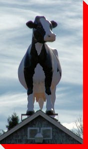

LARGE CANADIAN ROADSIDE ATTRACTIONS

Cow
Cavendish, Prince Edward Island
9139 Cavendish Road, at the
Cavendish Boardwalk
.
GPS: N46°28.895 W63°24.705
Credit:
L&L van Bodegom
Return to Prince Edward Island Page
Main
|
What's New
|
By Location
|
Alphabetical Listing
|
By Type
Wanted Photos List
|
Archive